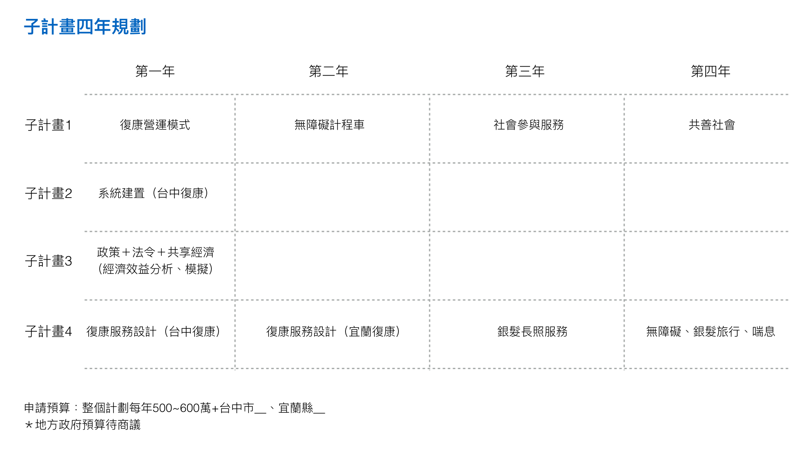
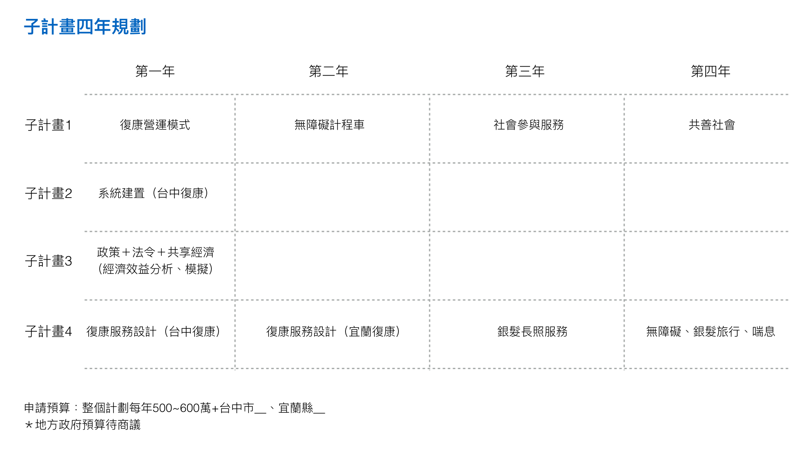

Posted by 侯勝宗 · Mar 21, 2017 at 2:55 AM Untitled 謝謝唐老師的提醒，請大家儘量協助。這二天我會先將總計畫先寫一個暫時性的初稿，好提供大家的對照與參考，謝謝。 👏 Comments & Events 侯勝宗, 所長 麻煩子計晝二與三提供分年的工作規劃，好繪製分年工作表，好供橫向的工作聯結與對照。 Mar 21, 2017 at 2:58 AM Notified 12 people Sabrina 楊怡馨, 碩士生  20170315復康巴士.001.jpeg 350 KB • Download 這是上週會議-初步四年規劃表，以供參考 Mar 21, 2017 at 3:01 AM Notified 12 people Ya-Wen Chen, 執行長 子計畫3 初步提出還請各位多多指教~第一年 公共運輸發展政策發展、DRTS& MaaS發展、復康巴士營運現況分析、共享運具法規相關探討、共享運具經濟效益評估初探台中復康巴士聯合派遣之可行性探討第二年 無障礙與多元計程車服務方式現況分析、擴大服務範疇之探討復康巴士與無障礙計程車聯合派遣之相關法規分析、試辦場域之規劃第三年 復康巴士擴大至非特定對象之法規探討、試辦場域之規劃、營運模式之初步建議第四年 旅遊、喘息等多元創新服務之可行性分析、營運模式之初步建議 Mar 21, 2017 at 8:18 AM Notified 12 people
Sabrina 楊怡馨, 碩士生  20170315復康巴士.001.jpeg 350 KB • Download 這是上週會議-初步四年規劃表，以供參考 Mar 21, 2017 at 3:01 AM Notified 12 people
Ya-Wen Chen, 執行長 子計畫3 初步提出還請各位多多指教~第一年 公共運輸發展政策發展、DRTS& MaaS發展、復康巴士營運現況分析、共享運具法規相關探討、共享運具經濟效益評估初探台中復康巴士聯合派遣之可行性探討第二年 無障礙與多元計程車服務方式現況分析、擴大服務範疇之探討復康巴士與無障礙計程車聯合派遣之相關法規分析、試辦場域之規劃第三年 復康巴士擴大至非特定對象之法規探討、試辦場域之規劃、營運模式之初步建議第四年 旅遊、喘息等多元創新服務之可行性分析、營運模式之初步建議 Mar 21, 2017 at 8:18 AM Notified 12 people
 👏
👏
這是上週會議-初步四年規劃表，以供參考
第一年 公共運輸發展政策發展、DRTS& MaaS發展、
復康巴士營運現況分析、共享運具法規相關探討、共享運具經濟效益評估初探
台中復康巴士聯合派遣之可行性探討
第二年 無障礙與多元計程車服務方式現況分析、擴大服務範疇之探討
復康巴士與無障礙計程車聯合派遣之相關法規分析、試辦場域之規劃
第三年 復康巴士擴大至非特定對象之法規探討、試辦場域之規劃、營運模式之初步建議
第四年 旅遊、喘息等多元創新服務之可行性分析、營運模式之初步建議